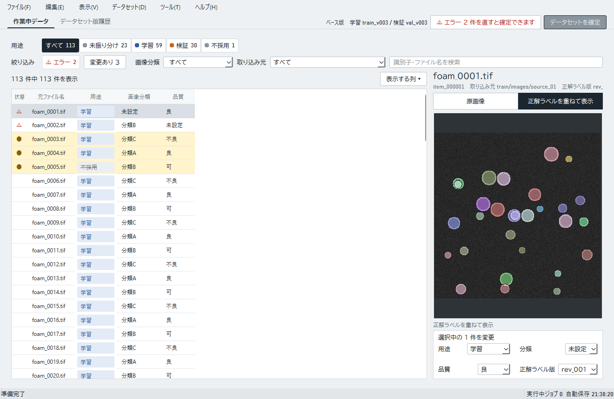
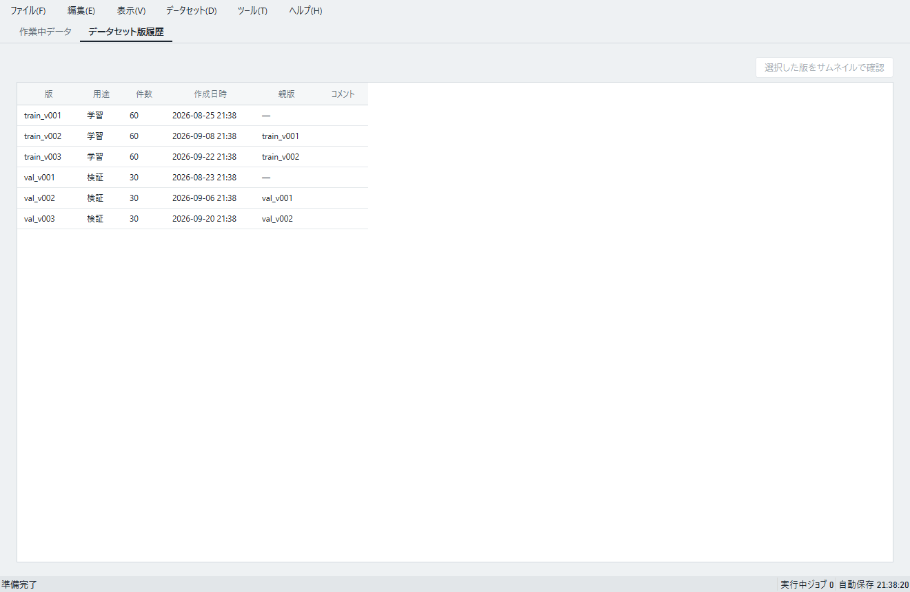

現在は模擬処理です。取り込み、振り分け、確定操作で作る版は実接続の学習に使えません。確定済みの既存データセット版の読込みは実データに接続しています。
作業中データを確認する
「作業中データ」タブには、編集対象の画像とメタデータが表で並びます。検索欄や分類・品質・用途の絞り込みを使い、対象行を選んでから操作します。画像や正解ラベル画像を確認しながら、行の情報を見直します。


データを取り込む
- 上部の「ファイル」メニューから「画像を取り込む」を選び、画像フォルダと正解ラベル画像フォルダを指定します。
- 取り込み設定で各行の用途、分類、品質を確認します。
- 内容を確認して取り込みを確定します。
取り込んだ画像は、用途を「学習」または「検証」に分けて管理します。検証用データは学習に混ぜず、候補評価とリリース判断に使います。正解ラベルを直す場合は過去版を上書きせず、新しい正解ラベル版を選びます。
振り分けと表計算ファイル
「データセット」メニューから「自動振り分け」を選び、複数の行を振り分けます。表示された対象と振り分け先を確認してから適用できます。誤って適用したときは「元に戻す」を使います。「連続振り分け」では画像を1件ずつ見て、用途や分類を割り当てます。
「ファイル」メニューの「Excel に出力」で表計算ファイルを出力し、「Excel から取り込む」で編集したファイルを取り込めます。取り込み時にエラーが表示された場合は、指摘された値を直して再度取り込んでください。行番号ではなくデータ識別子で照合されます。


内容を確認して確定する
- 表のエラー表示を確認し、必須情報や画像と正解ラベル画像の対応を直します。
- 上部の「データセットを確定」を押し、確定対象や用途を確認します。
- 確認画面の案内に従って確定します。整合性エラーが残っている場合は、該当行を修正してからやり直します。
学習用版は、元にした検証用版と一組で管理されます。確定版は変更できません。なお、この画面で確定した版は現在の実接続学習へ渡らないため、既存の確定済み版を使ってください。
版履歴を見る
「データセット版履歴」タブでは、確定済み版の用途、作成日時、画像数を確認できます。版を選び「サムネイルで確認」を押すと、含まれる画像を閲覧できます。原画像・正解ラベル画像を直接削除する操作はありません。